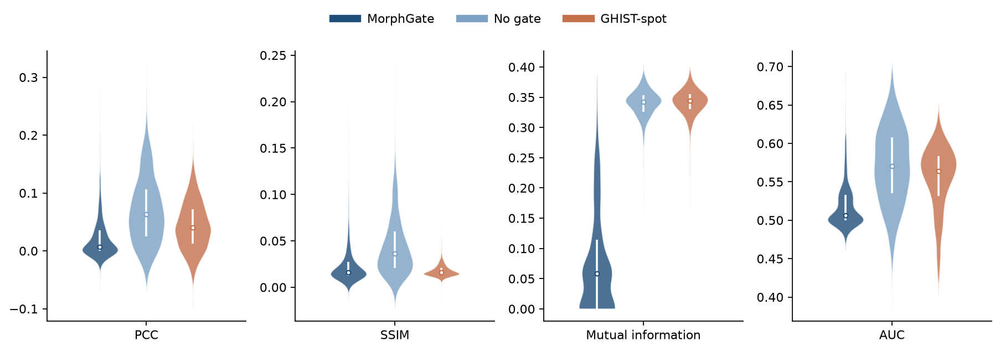
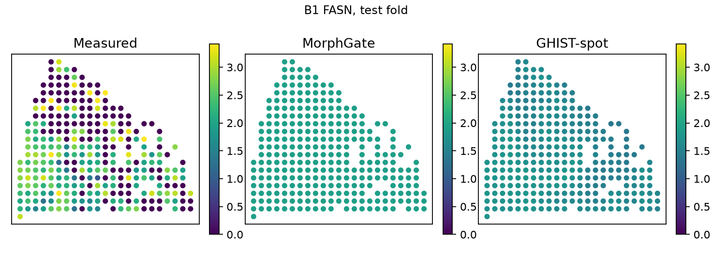

同一套 HER2ST 上比较 H&E 预测空间转录组
公众号文章复述的是 Wang、Chan、Fu 等人 2025 年在 Nature Communications 的基准：11 种方法、五套空间转录组，再用 TCGA 乳腺癌看生存。这篇综述《Predicting spatial transcriptomics from histology images》（Exploration，2026）又列了 40 多种模型。这里把两边的工具收在一页，测评只用一套数据。
页面每两分钟刷新。格子里的数只在这次计算写进结果文件之后出现。更新时间写在表下。
用哪套数据
HER2 阳性乳腺癌的空间转录组，Andersson 等人，Zenodo 10.5281/zenodo.4751624。服务器上已有 36 张切片、8 个供体，路径 /mnt/storage/bzhang/morphgate/data/her2st。划分跟 Wang 的基准和 MorphGate 已经用过的相同：四折是病人 AB、CD、EF、GH，同一病人的相邻切片留在同一折。每一轮两折训练，一折验证，一折测试。基因是全体切片共有、log1p(CP10k) 方差最高的 785 个。每个基因先在切片上算，再对病人平均，再对四个测试折平均。
指标是 Pearson 相关、SSIM、互信息、AUC 和 NRMSE。公众号图里还有 Visium、肾癌、TCGA 生存和可用性评分。那些要用别的数据和人工可用性打分，这一页先不混进去。
公众号里的 11 个工具
文章对应的论文是 10.1038/s41467-025-56618-y。他们的复现代码在 SydneyBioX/HEtoSGEBench，处理好的五套数据在 Zenodo 10.5281/zenodo.14602489。各方法自己的仓库如下。EGN 和 DeepPT 的仓库这次还没对上，表里先空着，不写一个没打开过的地址。
| 方法 | 仓库 | 这次的状态 |
|---|---|---|
| DeepPT | 还没对上 | 排队。原文是从图像推批量转录组，Wang 把它改去预测空间表达 |
| EGNv1 | 还没对上。biomed-AI/EGN 不存在 | 排队 |
| Hist2ST | biomed-AI/Hist2ST | 已克隆到服务器 |
| THItoGene | yrjia1015/THItoGene | 官方说明用 HER2ST，785 个基因 |
| EGNv2 | 还没对上 | 排队。综述里的名字是 EGGN |
| DeepSpaCE | tmonjo/DeepSpaCE | 已克隆到服务器 |
| TCGN | lugia-xiao/TCGN | 官方 train.py --fold 是按切片留出。公平比较要改成上面的病人四折，改完才记数 |
| ST-Net | bryanhe/ST-Net | 已克隆到服务器 |
| iStar | daviddaiweizhang/istar | 它把斑点表达推到接近细胞的分辨率。Wang 把它放进了 11 个方法 |
| HisToGene | maxpmx/HisToGene | 已克隆到服务器 |
| GeneCodeR | AskExplain/GeneCodeR | R。仓库说明是扰动图像上的空间基因编码 |
2026 综述里多出来的工具
综述是 Exploration，2026，EXO.2026.0020。表 3 收到 2026 年 7 月 4 日，并且把 DeepPT 排除在外，因为它最初是为批量转录组写的。下面这些不在公众号的 11 个里面。已经打开过的仓库写了地址。其余只记名字，地址核对到了再补，避免写错链接。
| 方法 | 仓库 | 综述里和 HER2 或乳腺癌有关的一点 |
|---|---|---|
| BLEEP | bowang-lab/BLEEP | 图像和表达做成对照嵌入，再用参考样本填查询图像 |
| TRIPLEX | NEXGEM/TRIPLEX | 三种分辨率的图像一起用，材料里包含 HER2 乳腺癌 |
| BrST-Net | Mamunur-20/BrSTNet | 在旧版乳腺癌空间转录组上预测高表达基因 |
| STimage | BiomedicalMachineLearning/STimage | 材料里包含 HER2，也可以换成组织学基础模型 |
| GHIST | 本次用的是斑点上的六个程序，代码在 MorphGate 仓库里 | Fu 等人原文的深度网络报告 HER2 相关 0.16。那个数留在文献列，不画进这次的图 |
| NSL、XFuse、M2ORT、IGI-DL、HE2Gene、HEST-1k 岭回归、HistoSPACE、RankByGene、Stem、OmiCLIP、HECLIP、DANet、PRTS、SCellST、CMRCNet、UMPIRE、Path2Space、SEPAL、TransformerST、STFormer、ErwaNet、ResSAT、HGGEP、MclSTExp、STMCL、DeepSpot、STFlow、SPiRiT、STPath、PH2ST | 仓库还在逐个打开 | 其中 Stem、STFlow、STPath、Path2Space、RankByGene、DeepSpot、PH2ST、UMPIRE 依赖 UNI、CONCH、GigaPath 这类要申请的基础模型权重。权重没有下来之前不记它们的相关 |
这次已经能写上的数
同一套 HER2ST、同一套四折上，已经算完的是 MorphGate 去掉门控，和六个表达程序的 GHIST-spot。深度网络还没开始训。GPU0 上正在跑同一账户的 vcellx/train_cnn.py（PID 2832434，约 2.3 GB）。深度模型等这块卡空出来再用 GPU0。GPU1 不用。
| 方法 | PCC | SSIM | 互信息 | AUC | NRMSE | 耗时（秒） | 这次的判断 |
|---|---|---|---|---|---|---|---|
| MorphGate，去掉门控 | 0.071 | 0.045 | 0.338 | 0.570 | 0.315 | 0.15 | 相关和 SSIM 高于同一次的 GHIST-spot。它是染色特征加岭回归。全基因相关仍低于 GHIST 原文的 0.16 |
| GHIST-spot | 0.044 | 0.018 | 0.340 | 0.554 | 0.303 | 9.57 | 表达被限制在 6 个程序里，SSIM 更低。这不是 Fu 等人训练过的那个网络 |
| 上面列出的其余方法 | — | — | — | — | — | — | 等官方代码在这四折上跑完再写优劣 |
MorphGate 带门控的全基因相关是 0.025，因为没过门的基因填成训练集均值，所以主表用去掉门控的一行。GHIST 原文 0.16 来自 Fu 等人 Nature Methods 2025 的图 3，他们的基因名单和是否取最好一折都和这里不完全相同。


还要做的计算
13 个官方仓库已经克隆到服务器 /mnt/storage/bzhang/he-st-bench/repos：Hist2ST、THItoGene、TCGN、ST-Net、DeepSpaCE、iStar、HisToGene、GeneCodeR、BLEEP、TRIPLEX、BrST-Net、STimage，以及 Wang 等人的复现框架 HEtoSGEBench。每个方法用它自己的模型，输入改成这 36 张切片和这四折，预测 785 个基因，再按同一套 PCC、SSIM、互信息、AUC、NRMSE 汇总。官方脚本若只能按切片留出，那个数单独记，不和这张表混在一行里。一个方法跑完，这一页的表和图就补上一行。
Wang 等，Nature Communications，2025，10.1038/s41467-025-56618-y。综述，Exploration，2026，EXO.2026.0020。HER2ST，10.5281/zenodo.4751624。